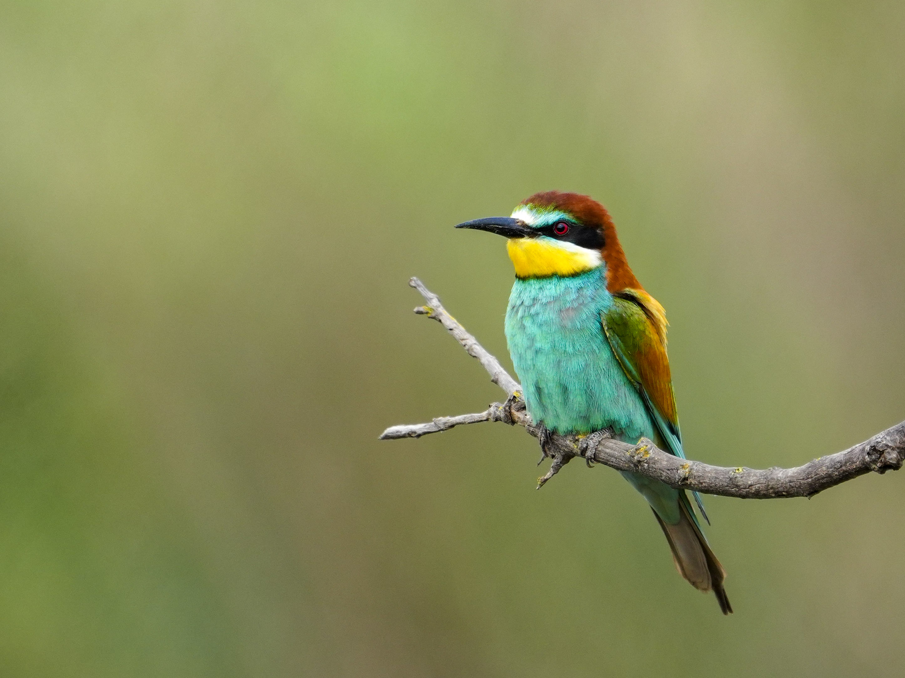

Télécharger l’application
Explorez le site, signalez les anomalies, découvrez la faune et la flore, et suivez les actualités de la Maison des Orpellières.

Entre mer et terre

Biodiversité

Espèces remarquables
Fonctionnalités principales
🌊 Entre mer et terre
Carte interactive, sentiers, zones sensibles, vue satellite.
Carte interactive, sentiers, zones sensibles, vue satellite.
🦎 Biodiversité
Guide faune & flore, signalement d’espèces, fiches illustrées.
Guide faune & flore, signalement d’espèces, fiches illustrées.
🏖️ Dune fragile
Alertes, recommandations, périodes de chasse, travaux.
Alertes, recommandations, périodes de chasse, travaux.